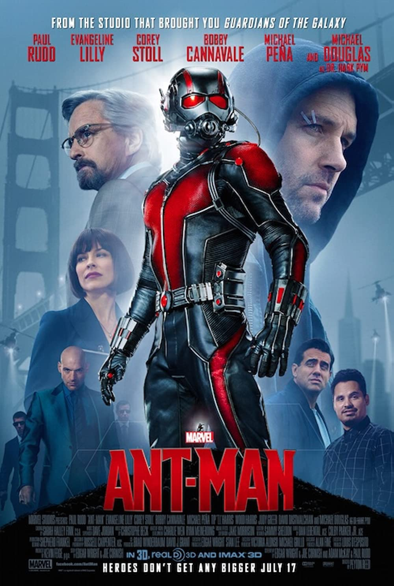

Iron Man

Filmen handlar om Tony Stark som är en rik och smart uppfinnare. Vantligtvis uppfinner han vapen men när vapenrna kommer i fel händer och han får möta konsekvenserna bygger han dräkt för att skydda sig. Filmer är den första i Marvel.
The Incredible Hulk

Det är en ganska orelevant film som introducerar hulken med en annan skådespelare än den vi senare kommer se. Det viktiga att ta med sig härifrån är att hulken finns och blivit rekryterad till Avengers i slutet av filmen.
Iron Man 2

Filmen introducerar många viktiga element till framtiden såsom S.H.I.E.L.D. och agenten Black Widow. Utöver det så handlar filmen om Tony Stark och hans problem när världen vet att han är Iron man.
Thor

I denna film visas guden Thors problem med sin bror Loki som kommer spela en viktig roll i framtiden. Hawkeye eller Clint Barton är en S.H.I.E.L.D. agent som introduceras när hammaren undersöks på jorden. Man får även se hur Odin ser till att bara den som är "worthy" kan lyfta hammaren, vilket Thor tillslut blir.
Captain America

Filmen utspelar sig under andra världskriget och visar hur Steve Rogers går från att vara svag till en stark superhjälte, men den visar även vitkiga grunder för hur allt startades och har viktiga detaljer till kommande filmer.
Avengers

Detta är första tillfället vi får se alla superhjältar tillsammans, och är egentligen filmen allt annat kommer bygga på i framtiden. Här försöker Loki ta över jorden men, Iron man, Hulken, Thor, Captain America, Hawkeye och Black widow har som mål att stoppa honom.
Iron Man 3

Filmen handlar om Iron man som har svårt att separera sig från sin dräkt, när han får en ny fiende som kallas för mandarinen. I denna film får vi även se Tony Starks bästa vän Rhodey eller War machine ta på sig rollen som hjälte.
Thor: The Dark World

Denna film visar när Thor slåss mot några alver, men viktigt att ta med sig härifrån är att Jane Foster får i sig ett slags vapen som kallas aether. När filmen är slut har dock aether avlägnats från Jane, och ges till en salmare som kallas "The Collector".
Captain America: The Winter Soldier
Det som sker här är att Steve Rogers och Natasha Romanoff jobbar som agenter åt S.H.I.E.L.D. när de skickas på uppdrag och får reda på att allt inte är som det verkar.
Guardians of the Galaxy

Denna film kan anses avlägsen från resten av universumet då den utspelar sig i rymden, men så småningom kommer allt att knytas ihop. Huvudkaraktärerna är ett gäng brottslingar som går ihop för att rädda världen. Här introduceras även Thanos mer som kommer ha en viktig roll i framtiden.
Avengers: Age of Ultron

Tony Stark och Bruce Banner skapar en robot som ska skydda världen men istället inser den att människorna är största hotet mot jorden och anfaller. I denna film introduceras även syskonen Wanda och Pietro.
Ant-man

Denna film handlar om Scott Lang som nyss kom från fängelset. Han får en dräkt som gör att han kan krympa och bli jätteliten, och blir rekryterad av Hank Pym.
Captain America: Civil War

All förstörelse börjar få konsekvenser och stater vill ta makt över superhjältarna för att skydda resten av världen. Steve Rogers tar sidan emot detta och Tony Stark tycker det är rätt. Detta delar Avengers i två vilket skapar bråk.
Doctor Strange
Filmen handlar om doktorn Steven Strange som är med om en bilolycka vilket gör att han inte kan röra händerna, och leder till att han tappar kontakten med hans kärlek Christine Palmer. Han försöker fixa sina händer genom magi och lär sig materialla konster. Tillslut blir han övermagiker och får en infity stone som kallas time stone, vilket gör att han kan kontrollera tiden.
Guardians of the Galaxy Vol 2

Filmen handlar om gänget som räddar världen och utvecklar deras relationer. Star-Lord får reda på information om sin pappa och mer information av rymden som en del av universumet ges.
Spider-man: Homecoming

Efter tiden med Iron man i Civil War får Peter Parker gå tillbaka till vanliga livet och skydda sitt kvarter i New York. Han vill hela tiden göra mer och få vara med Tony Stark men Peter är för ung. Skurken han slåss mot har fått teknologi av Stark Industries och har ett hat mot det Tony Stark gjort.
Thor: Ragnarök

Filmen handlar om Thor som efter ett bråk med hans syster Hela fastnar på ett öde ställe där han måste slåss för att överleva.
Black Panther

Denna film handlar om Black Panther som introducerades i Civil War och hur det går när han tar över tronen i Wakanda. En gammal fiende försöker förstöra landet Wakanda som har väldigt avancerad teknik och den starka metallen vibranium.
Avengers: Infinity War

Alla tidigare filmer har byggt upp till denna, där alla hjältar möts för att stoppa Thanos från att samla alla infinity stones. Denna film är den första som samlar alla avengers från rymden och jorden för att rädda världen.
Ant-man and the Wasp

Filmen utspelar sig innan Infinity War där får vi se Scott Lang med fotboja efter händelserna i Civil War. Scotts flickvän som även kallas The Wasp får hjälpa till och rädda världen genom att ta på sig sin mammas gamla dräkt. De utforskar "quantum realm" mer och hittar The Wasps mamma där.
Captain Marvel

Marvels första film med en kvinnlig huvudkaraktär utspelar sig under 90-talet. Carol Danvers räddar världen i rymden utan att ha något minne från hennes tidigare liv, där hon bodde på jorden. Captain Marvel var pilot i hennes tidigare liv men i en olycka med tesserakten fick hon krafter och togs till rymden. I filmen hjälper hon skrulls som kan se ut som vem som helst från att bli attackerad från kree.
Avengers: Endgame

Uppföljning till Infinity War där vi återigen får se hjältarna kämpa för att rädda världen. Filmen kan ses som en avslutning till allt som byggts upp i tidigare filmer.
Spider-man: Far From Home
I denna film åker Peter Parker åker till Europa. I slutet av filmen litar han på skurken Mysterio som lurar honom. Mysterio får resten av världen att tro Tony Starks teknologi med hjälp av Peter dödar människor, innan han anvlöjar Peters identitet för världen.
Wandavision <3

Marvels första tv-serie på disney plus handlar om Wanda och Vision. Det som utforskas i serien är deras relation under 50-talet, men något stämmer inte i denna idylliska värld.
The Falcon and the Winter Soldier
Denna serie handlar om Falcon och Winter Soldier och deras bromance, men även viktiga mänskliga rättigheter. Bucky får lite av ett avslut på hans historia och Sam får axla en ny roll.
Loki

Efter händelserna i Endgame får Loki problem när han möter på TVA, eftersom han brutit mot det som ska ske. Händelserna i serien förstör vår tidslinje vilket skapar kaos i framtiden.
Black Widow

I denna film får vi reda på Black Widows bakgrundshistoria, och vi får även träffa hennes syster Yelena. Filmen visar Natasha kämpa mot demoner från förr.
What
Den första animerade serien i MCU visar vad som skulle hänt om något var annorlunda
Shang-chi

Film